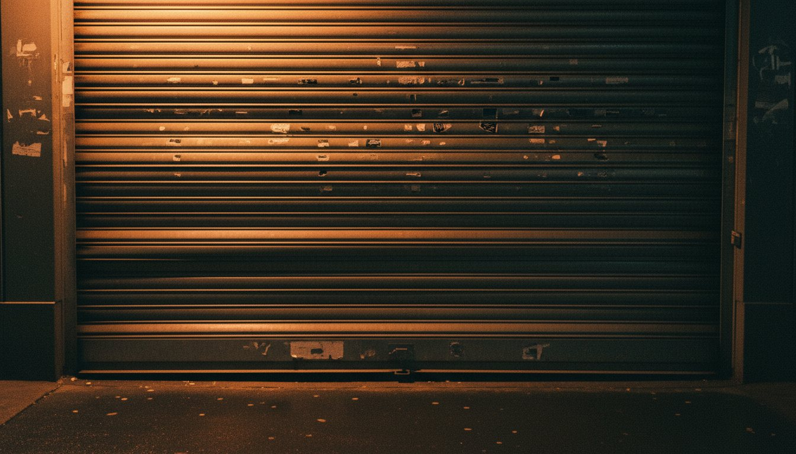
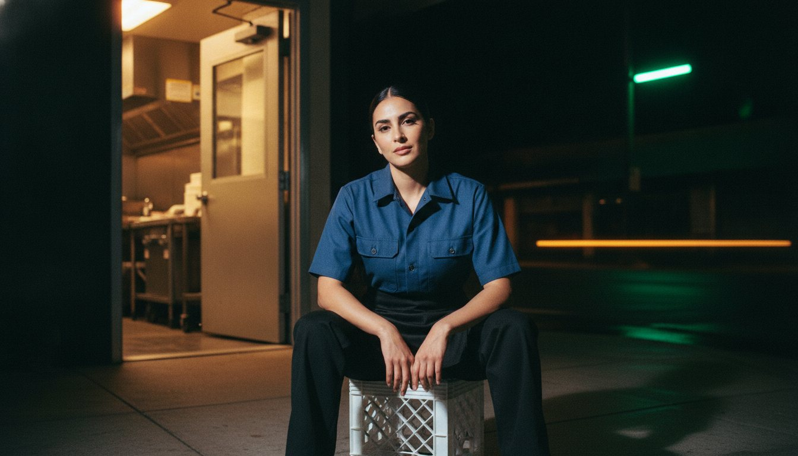
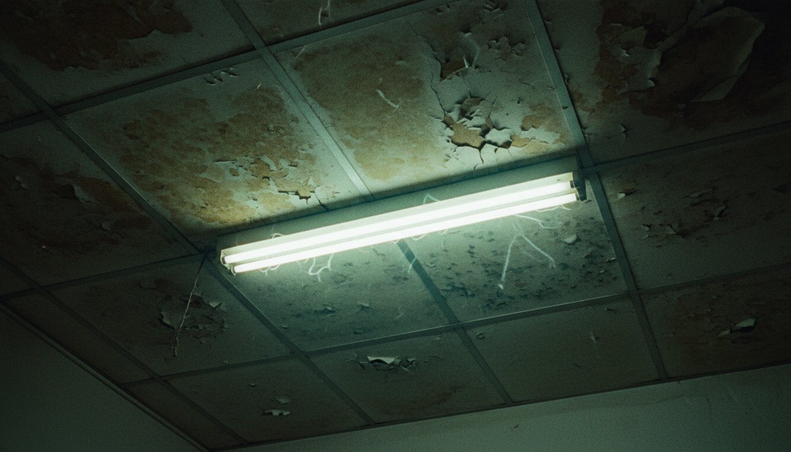

About
Made by people who closed the bar.
Night Shift Supply started as a list on the back of a receipt: everything wrong with the clothes we wore to work. Ten years of closing shifts turned the list into five pieces. This is what they had to survive.

The shutter comes down at two.
Then the real work starts: the count, the mop, the ice, the walk. A jacket that looks good at the bar has to still look good under a streetlight forty minutes later, and it has to be seen by a bus driver doing thirty. That is why the hem reflects.

The pen always walks.
Every shirt we ever wore had one pocket too few and no place for the pen. So the Pass Shirt has two snap pockets and a stitched slot on the left, where your hand already goes.

The diner is the office.
Breakfast at 5 a.m. with people from three other kitchens. Nobody is dressed up. Everybody looks like they belong. That is the brand. We shot the whole lookbook on the walk between the last shutter and the first coffee.

About this site.
Night Shift Supply is a fictional label. Angel Valle designed the brand, wrote the copy, directed the AI-generated garments and photography, and built the site as a portfolio piece. No product exists and nothing is for sale. The clock in the header is real, though. It is always some hour of somebody's shift.